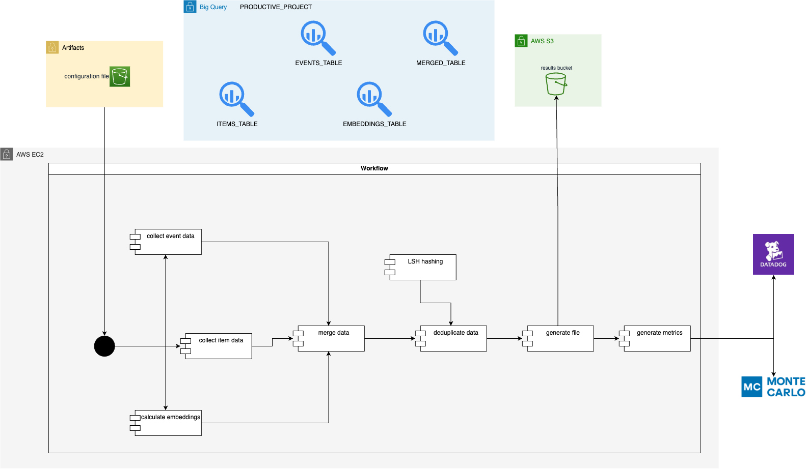

Visual Product Recommendation System
For this project for an e-commerce, it was developed the logic and infrastructure to generate supplementary recommendations (similar range of products but not the same product).
The main source of data were pictures for each product (when available). Then their embeddings were calculated, compared against each other and the pairs of recommendations were ranked according to metrics of interest, providing the most similar products.
This project rendered up to 5% increase in BTR (buy-through-rate, number of purchases/number of views) through sales in a new carrousel.
Some of the tools used for this project were:
AWS S3 for object storage of recommendations generated and consumption of indexes generated.
GCP BigQuery for SQL-based querying and tables in data warehouse.
Python for all the coding involved using OOP.
Datadog and Monte Carlo for monitoring and metrics.
The use of unstructured data for recommendation systems can be challenging. Here are some challenges faced and decisions made:
Inbetween images are the best: what are the best lower and upper thresholds to filter distances between two embeddings? Finding these thresholds for cosine similarity was key to remove images that are either very different (and don't make sense being recommended) or very similar (why would you recommend the exact same product for an exploration offer?). Experiments were performed to find the best results.
Deduplication: recommendation images that were too similar between each other had to be addressed by LSH hashing mechanism to group them and only retrieve one element from the group (preferrably the product that had best metric performance).
Not every product has an image: removing products that have no images from the computation was necessary.
Heavy cost and processing times to work with embeddings: finding the right data structures and algorithms is always key.
